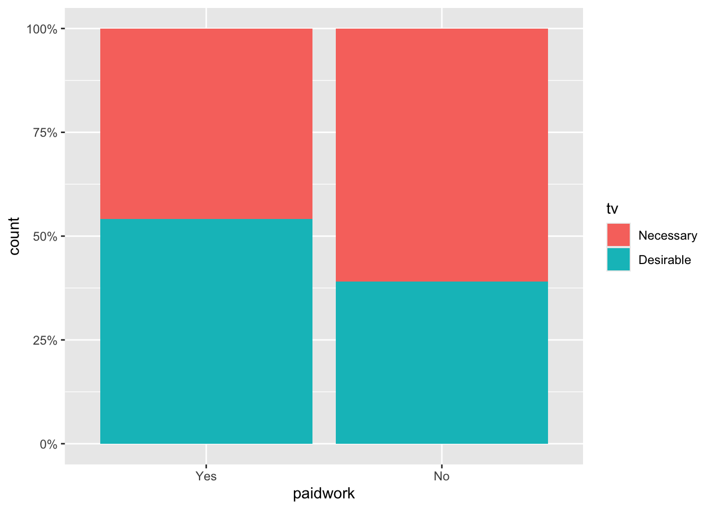

# load R packages
library(tidyverse)
library(knitr)
library(janitor)
library(scales)
library(ggstats)
# load data
load("pse_omni.Rdata")3 Describing Categorical data
3.1 Introduction
In this workshop we will get to grips with the basics of describing categorical data using RStudio. To follow this guide you should have first watched the video lectures on the VLE where each of the techniques here used are discussed in detail. Also on the VLE, you will find RStudio video tutorials that elaborate on this workshop guide.
The dataset we will analyse the “2012 UK Omnibus Poverty and Social Exclusion Survey: Necessities of Life” which is an
‘attitudinal survey aimed to identify what the population as a whole think are ’necessities’: things that everyone should be able to afford and which no one should have to go without. Data were collected in Northern Ireland Statistics and Research Agency (NISRA), and in Great Britain (Scotland, England and Wales) by NatCen Social Research’.
You can find the dataset and relevant documentation in the UK Data Service by clicking this link. If interested in finding out more, you can read a report on the main findings here
The substantive questions that drive this workshop are:
- to what extent do UK residents regard a range of goods and services as necessary or merely desirable?
- to what extent do perceptions of necessities vary across relevant socio-demographic groups?
To answer these questions we will learn about and use in practice the following analytical techniques:
- Numerical Summaries
- Univariate frequency tables
- Bivariate contingency tables
- Visualisation
- Univariate bar plots
- Bivariate clustered and Stacked bar plots
You will notice that these are the very same techniques you learnt about in the quantitative part of Level 2 Research Methods, so none of this material should be new to you. Having said this, we will be able to explore some aspects in a bit more detail to strengthen both your intuitive and statistical understanding of what the techniques are doing.
3.2 Data and libraries
Assuming that you are already initialised RStudio in your computer and you have opened a project located in a folder containing the dataset file, the first steps is to load the dataset, call a number of packages that are necessary to run the code for this workshop:
If you want to have a quick look at the dataset to get a sense of what it is like, you can use the functions glimpse() - list of variables and values - or view() - the dataset in spreadsheet form - with the dataset called omni - this is not shown in the guide as it takes up multiple pages!
glimpse(omni)We will then move straight to the analysis.
3.3 Numerical description of categorical data:
3.3.1 Base R
To describe the univariate distribution of a categorical variable we use frequency tables. Frequency tables can be produced in R using the function table() which can report both raw counts and percentages depending on how we specify the code.
We begin by describing the univariate distribution as raw counts of respondents for each category of the variable tv.
table(omni$tv)
Necessary Desirable
1013 892 The table shows that 1013 respondents say that having a TV is a necessity whereas 892 answer that it is simply desirable.
Based on manipulating these raw counts we can calculate other quantities. In order to manipulate this table we need to store it in memory and give it a name, in this case tabtv
# We create an object call tabtv that contains the distribution of variable "tv" in the dataset omni
tabtv <- table(omni$tv)
# We ask R to display the new object "tabtv"
tabtv
Necessary Desirable
1013 892 The first thing we can do is to add margins to the tabtv table - i.e. the sum of all observations contained in your table - using the function addmargins()
addmargins(tabtv)
Necessary Desirable Sum
1013 892 1905 We can also express the numbers in the table as proportions or percentages
# as proportion
prop.table(tabtv)
Necessary Desirable
0.5317585 0.4682415 #as percentage
prop.table(tabtv)*100
Necessary Desirable
53.17585 46.82415 3.3.2 Tidyverse
You can produce the same results using tidyverse functions. The tidyverse is a family of packages that have consistent coding principles and data handling conventions. For a detailed treatment of the tidyverse see the book R for Data Science (2nd Edition) by Wickham, Çetinkaya-Rundel and Grolemund.
A key element of the tidyverse is the use of the pipe operator |> (hotkey: command/ctrl + shift + m) which allow us to write sequences or chains of functions - a bit like a baking recipe as shown in figure 1.

Here’s an example of how we create a frequency table in R using tidyverse functions or verbs and the pipe operator:
omni |> # dataset
drop_na(tv) |> # drop missing values from variable tv
group_by(tv) |> # across the response categories
summarise(n = n()) |> # count the respondents
mutate(perc = n / sum(n) * 100) |>
kable() # render nice looking table| tv | n | perc |
|---|---|---|
| Necessary | 1013 | 53.17585 |
| Desirable | 892 | 46.82415 |
or using the function count()
omni |> # dataset
drop_na(tv) |> # drop missing values from variable tv
count(tv) |> # count the respondents in each category
mutate(perc = n / sum(n) * 100) |>
kable() # render nice looking table| tv | n | perc |
|---|---|---|
| Necessary | 1013 | 53.17585 |
| Desirable | 892 | 46.82415 |
To round percentages up to 2 digits you can use the round() function
omni |> # dataset
drop_na(tv) |> # drop missing values from variable tv
count(tv) |> # count the respondents in each category
mutate(perc = round(n / sum(n) * 100, 2)) |> # calculate percentage
kable() # render nice looking table| tv | n | perc |
|---|---|---|
| Necessary | 1013 | 53.18 |
| Desirable | 892 | 46.82 |
Or you can use the function percent from the package scales which will also add the % sign
omni |> # dataset
drop_na(tv) |> # drop missing values from variable tv
count(tv) |> # count the respondents in each category
mutate(perc = percent(n / sum(n), 0.01)) |> # calculate percentage
kable() # render nice looking table| tv | n | perc |
|---|---|---|
| Necessary | 1013 | 53.18% |
| Desirable | 892 | 46.82% |
Finally, the tabyl function (from the janitor package) makes it quite easy to produce nice tables, which becomes particularly useful for contingency tables discussed further below.
omni |>
drop_na(tv) |>
tabyl(tv) |> # create frequency table
adorn_pct_formatting(digits = 1) |> # choose number of decimals
kable()| tv | n | percent |
|---|---|---|
| Necessary | 1013 | 53.2% |
| Desirable | 892 | 46.8% |
3.4 Graphical representation of univariate categorical data:
With ggplot we can create bar charts easily using the geom_bar option. The basic syntax is as follows:
# Basic barplot
ggplot(data = omni, aes(x = tv)) +
geom_bar(stat = "count")Notice that R ggplot creates a bar for the missing values (called NA). This NA bar draws away our attention from the Necessary and Desirable bars and could potentially distort the plot as a whole. We will remove the missing values by subsetting the data we input into the graph. To subset the data we use the following line when defining the data in ggplot: omni[!is.na(omni$tv), ]
# Eliminate missing value category from the chart with (omni[!is.na(omni$tv), ]
ggplot(omni[!is.na(omni$tv), ], aes(x=tv)) +
geom_bar(stat="count")Alternatively we can use the function complete.cases() which is a bit more readable and produces the same result:
# Eliminate missing value category from the chart with (omni[complete.cases(omni$tv), ]
ggplot(omni[complete.cases(omni$tv), ], aes(x=tv)) +
geom_bar(stat="count")
Often you may want to plot proportions rather than counts, which can be achieved by changing the aesthetics’ options. In this case, after declaring the variables write a comma and add after_stat(prop), group = 1:
ggplot(data = omni[complete.cases(omni$tv), ], aes(x=tv, y = after_stat(prop), group = 1)) +
geom_bar(stat="count") Since percentages are basically proportions multiplied by 100, we can have percentages on our plot by re-scaling (changing the scale) of the vertical axis using the option scale_y_continuous(labels = scales::percent)
# If you want proportions, you need to modify the aesthetics options for the y axis
ggplot(data = omni[complete.cases(omni$tv), ],
aes(x=tv, y = after_stat(prop), group = 1)) +
geom_bar(stat="count") +
scale_y_continuous(labels = scales::percent)Or using the tidyverse you can integrate the specification of the ggplot graphs as part of a wider sequence of functions applied to the same data:
omni |>
drop_na(tv) |>
ggplot() +
geom_bar(aes( x = tv, y = after_stat(prop), group = 1)) +
scale_y_continuous(labels = scales::percent)
Finally, we should change the labels in the plot and add a title to make it more informative
omni |>
drop_na(tv) |>
ggplot() +
geom_bar(aes( x = tv, y = after_stat(prop), group = 1)) +
scale_y_continuous(labels = scales::percent) +
xlab("Is a TV set necessary?") + # change the x axis label
ylab("Percentage of respondents") + # change the y axis label
ggtitle("A majority of respondents think a TV is necessary") # change the main title of the graph
You can also use specify labels and title within the function labs and produce the exact same results:
omni |>
drop_na(tv) |>
ggplot() +
geom_bar(aes( x = tv, y = after_stat(prop), group = 1)) +
labs(x = "Is a TV set necessary?", # specify x-axis lab
y = "Percentage of respondents", # specify y-axis lab
caption = "Poverty and Social Exclusion Survey 2012",
title = "A majority of respondents think a TV is necessary") # main title3.5 Exercise I
Provide the code necessary to calculate and plot the univariate distribution (as counts and percentages) of respondents according to whether they think having a “a damp-free house” (variable nodamp) is necessary as opposed to just desirable. You should obtain the following results:
Necessary Desirable
94.47 5.53 | nodamp | n | percent |
|---|---|---|
| Necessary | 1811 | 94.470527 |
| Desirable | 106 | 5.529473 |
3.6 Working with bivariate categorical data
After learning how to produce a frequency table, we move onto contingency tables or crosstabulations. Contingency tables help us represent the cross-classification of two or more categorical variables - i.e. how individuals are classified simultaneously in the categories of more than one variable.
For instance, we may want to find out whether one’s perception of TV as a necessity or a mere desire depends on past employment status. Not unlike the comparisons of pay between men and women (or levels of educational achievement) here we also compare the distribution of attitudes towards different goods between individuals classified in different socioeconomic categories.
3.6.1 Base R
We use again the function table() but this time we specify 2 variables as table(var1, var2).
table(omni$paidwork, omni$tv)
Necessary Desirable
Yes 438 516
No 571 365Notice how now we obtain the marginal values for each category.
tvpw<-table(omni$paidwork, omni$tv) # create table object
addmargins(tvpw) # add row, column and total sums
Necessary Desirable Sum
Yes 438 516 954
No 571 365 936
Sum 1009 881 1890It may be difficult to make sense of the raw counts, so it is often desirable to include either row or column proportions or percentages. This is easily done
# row percentages
prop.table(tvpw, 1)*100
Necessary Desirable
Yes 45.91195 54.08805
No 61.00427 38.99573#column percentages (re-arrange the table with omni$tv in the rows)
tvpw_inv<-table(omni$tv, omni$paidwork)
prop.table(tvpw_inv, 2)*100
Yes No
Necessary 45.91195 61.00427
Desirable 54.08805 38.995733.6.2 Tidyverse
We can achieve the same using tidyverse code, though it is decidedly more involved:
omni |>
drop_na(paidwork, tv) |> # remove missing values on two vars
group_by(paidwork, tv) |> #arrange by the categories of two vars
summarise(n = n()) |> # count respondents in each combination
spread(tv, n) |> # organise them as contingency table
adorn_totals(c("row", "col")) |> #add margins from tabyl
kable()| paidwork | Necessary | Desirable | Total |
|---|---|---|---|
| Yes | 438 | 516 | 954 |
| No | 571 | 365 | 936 |
| Total | 1009 | 881 | 1890 |
For row percentages you would use:
omni |>
drop_na(paidwork, tv) |>
group_by(paidwork, tv) |>
summarise(n = n()) |>
mutate(prop=n/sum(n)) |>
select(-n) |>
spread(tv, prop) |>
kable()| paidwork | Necessary | Desirable |
|---|---|---|
| Yes | 0.4591195 | 0.5408805 |
| No | 0.6100427 | 0.3899573 |
For column percentages you could use:
omni |>
drop_na(paidwork, tv) |>
group_by(tv, paidwork) |>
summarise(n = n()) |>
mutate(prop=n/sum(n)) |>
select(-n) |>
spread(tv, prop) |>
kable()| paidwork | Necessary | Desirable |
|---|---|---|
| Yes | 0.4340932 | 0.5856981 |
| No | 0.5659068 | 0.4143019 |
Finally, you could use tabyl() for row percentages
omni |>
drop_na(paidwork, tv) |>
tabyl(paidwork, tv) |>
adorn_totals(c("row", "col")) |>
adorn_percentages("row") |>
adorn_pct_formatting(digits = 1) |>
adorn_ns() |>
adorn_title() |>
kable()| tv | |||
|---|---|---|---|
| paidwork | Necessary | Desirable | Total |
| Yes | 45.9% (438) | 54.1% (516) | 100.0% (954) |
| No | 61.0% (571) | 39.0% (365) | 100.0% (936) |
| Total | 53.4% (1,009) | 46.6% (881) | 100.0% (1,890) |
Or column percentages
omni |>
drop_na(paidwork, tv) |>
tabyl(paidwork, tv) |>
adorn_totals(c("row", "col")) |>
adorn_percentages("col") |>
adorn_pct_formatting(digits = 1) |>
adorn_ns() |>
adorn_title() |>
kable()| tv | |||
|---|---|---|---|
| paidwork | Necessary | Desirable | Total |
| Yes | 43.4% (438) | 58.6% (516) | 50.5% (954) |
| No | 56.6% (571) | 41.4% (365) | 49.5% (936) |
| Total | 100.0% (1,009) | 100.0% (881) | 100.0% (1,890) |
3.7 Graphical representation of bivariate categorical data:
Contingency tables can also be represented graphically using bar plots, but the bars have to be plotted for each of the categories of the independent variable separately. This means we need to think carefully about what is the substantive nature of the relationship between both variables. Thus we may want to know:
- How the distribution of perception of necessities varies between different economic positions.
- The socioeconomic composition of those who think TVs are necessary compared to those that think TVs are only desirable goods.
The first seems to be a more plausible relation. It makes sense that we should care whether people with greater attachment to the labour market are more or less likely to consider TVs a necessity compared to those without.
The first bar plot we will create is a stacked bar chart.
#stacked bar chart
ggplot(data = omni[complete.cases(omni$tv) & !is.na(omni$paidwork) ,] ,
aes(x=paidwork)) +
geom_bar(stat="count", aes(fill=tv)) If we are interested in comparing the proportions within each group, particularly if there are large differences in raw counts, we can also stack them to add to 100%:
#stacked bar chart up to 100%
omni |>
drop_na(tv, paidwork) |>
ggplot(aes(x=paidwork)) +
geom_bar(stat="count", aes(fill=tv), position="fill") +
scale_y_continuous(labels = scales::percent)
We can also build a clustered bar chart which we can create in two different ways. The first is the classic clustered bar chart using the option position=“dodge” (position=“dodge2” will leave a space between the bars)
# clustered bar chart
omni |>
drop_na(tv, paidwork) |>
ggplot( aes(x=paidwork)) +
geom_bar(stat="count", aes(fill=tv),
position="dodge") To add percentages to a clustered bar chart is a bit cumbersome but here is a possible solution which basically involves calculating directly the proportions before plotting them. It requires an additional package called ggstats for geom_bar() to recognise proportions as the quantity to plot
omni |>
drop_na(tv, paidwork) |>
group_by (paidwork, tv) |>
count() |>
ggplot(aes(x=paidwork, fill = tv, weight = n,
by = tv, y = after_stat(prop))) +
geom_bar(stat="prop",
position="dodge") +
scale_y_continuous(labels = scales::percent)Rather than clustering within the same graph, an alternative is to use faceting:
# "faceted" clustered bar chart
omni |>
drop_na(tv, paidwork) |>
ggplot(aes(x=tv)) +
geom_bar(stat="count") +
facet_wrap(~paidwork)And we can obviously add labels and titles using the same functions as before.
3.8 Exercise II
Write the code to produce the contingency table and clustered and stacked bar charts below. Describe the bivariate distribution of item “appropriate clothes for a job interview” (variable jobfrock) across the educational categories of variable graduate.
Graduates Not Graduates
347 1582
Necessary Desirable
1236 643
Necessary Desirable
Graduates 71.39 28.61
Not Graduates 64.46 35.54